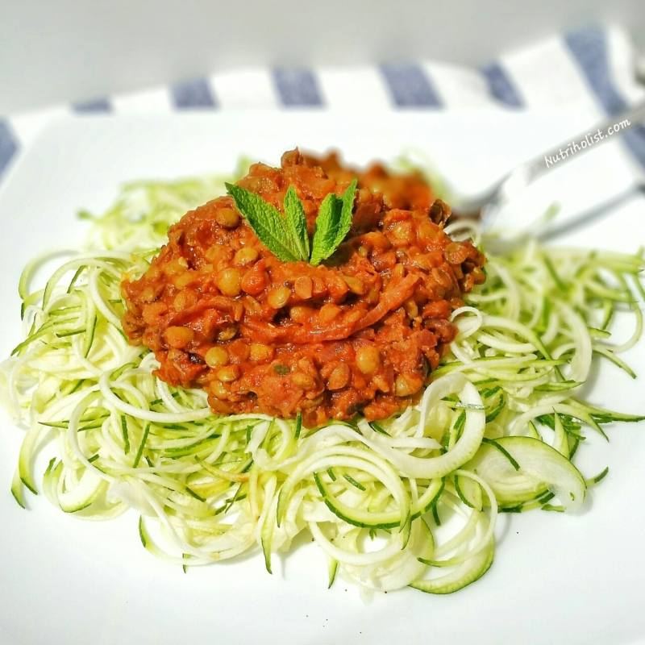

Zoodles with Lentil Sauce Recipe

Description
Tomato sauce is good, but it is so much better when it’s loaded with lentils and lots of veggies! This delicious
sauce was inspired by Dreena Burton’s book, Plant-Powered Families. It’s delicious over zoodles, but it’s just as
delicious over your favorite pasta, potatoes, rice, or even greens.
Ingredients
- 2 medium zucchini, spiralized
- 2 tbsp olive oil, divided
- 1/2 cup lentils
- 1/2 cup sugar free pasta sauce
- 1 cup broccoli florets
- garlic powder, salt, pepper to taste
Steps
- Saute zoodles in 1 tbsp olive oil until softened and slightly crisp, seasoning to taste.
- Meanwhile, cook lentils and combine with sauce until heated through.
- Heat olive oil in a pan over medium-high heat and saute broccoli with garlic powder, salt and pepper until
softened.
- Serve sauce over noodles and broccoli.